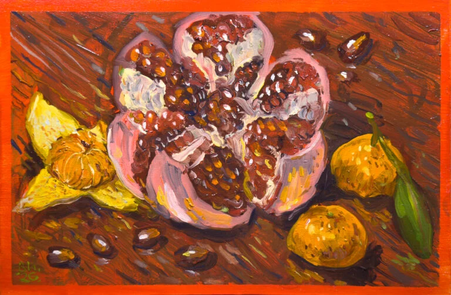
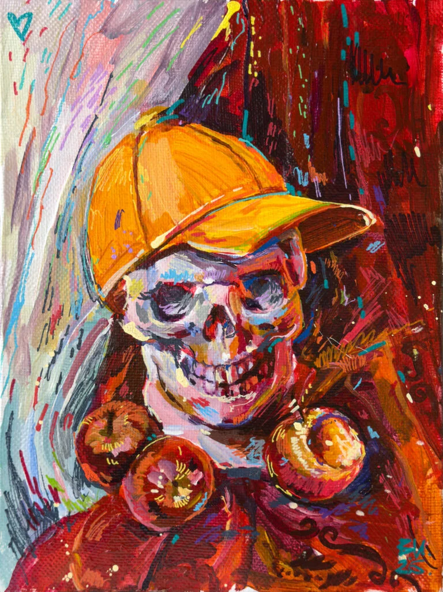
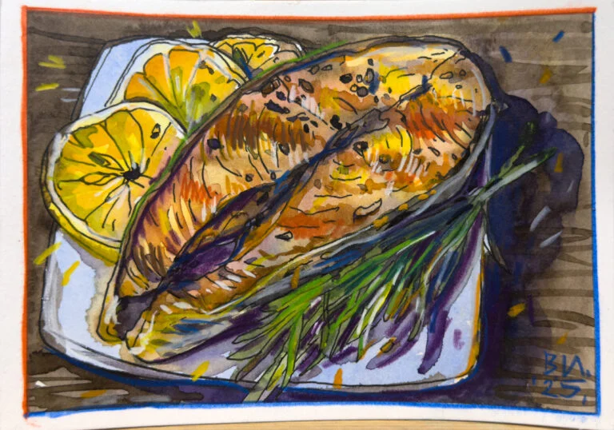

Краски,
бумага.

Гранат и мандарины / масло
Почерк художника / Валерий Исаченков
Живые буквы.
С листа бумаги — в твои слова.
Кириллица, латиница и три начертания.

Настоящий шрифт. Текст остаётся на твоём устройстве.

Гранат и мандарины / масло

Форель с розмарином и лимоном / графика
Надписи в этих примерах набраны Valera Sans. Больше работ в Telegram автора ↗
Картины показаны как примеры оформления. Для самостоятельного использования их репродукций нужно разрешение автора.
LIGHT / 300
Тихий вечер. Paint & paper.
REGULAR / 400
Тихий вечер. Paint & paper.
SEMIBOLD / 600
Тихий вечер. Paint & paper.
ааааа / ооооо
r / er / re / rr
дуга / луна / руль
сад / мало / клад
2026 / 35 000 ₽
У большинства букв, цифр и знаков есть несколько форм со сканов автора — всего 348 вариантов для 151 знака. Шрифт сам чередует их: одна и та же буква подряд всегда пишется по-разному, а одинаковые слова в разных местах текста выглядят немного иначе, как от руки.
Некоторые формы выбираются по соседям. Сразу после строчной латинской e буква r становится более плавной: er. В re, отдельно и в остальных сочетаниях она более вертикальная. Кириллическая у открывается там, где петля мешает ровному набору: дуга, луна, музыка, купить. В начале слова и в остальных сочетаниях остаётся петлевая. После «а» всегда стоит обычная «д» — её нижний штрих подныривает под хвостик. А «л» после букв с хвостиком внизу — а, к, ц, щ — приподнимается над ним.
Цифры почти в рост прописных, около 95% их высоты, поэтому цены и даты не теряются рядом с буквами. Край штриха выровнен: бугры и волны со сканов сглажены, а форма букв, углы и хвостики остались авторскими.
Чередование и замены включает галочка «Буквы чувствуют соседей», подъём «л» — галочка «Кернинг». Сними их, чтобы сравнить.
Можно использовать бесплатно, в том числе в коммерческой работе. Укажи название шрифта, автора и адрес его сайта. Изменение и переименование самого шрифта требуют разрешения.
Light, Regular, Semibold — в TTF, OTF и WOFF2. Для установки выбери TTF или OTF; для сайта — WOFF2 и готовый CSS.
Скачать комплект 0.6.2 ↗Предварительный выпуск: Light и Semibold пока экспериментальные. Проверки и ограничения.